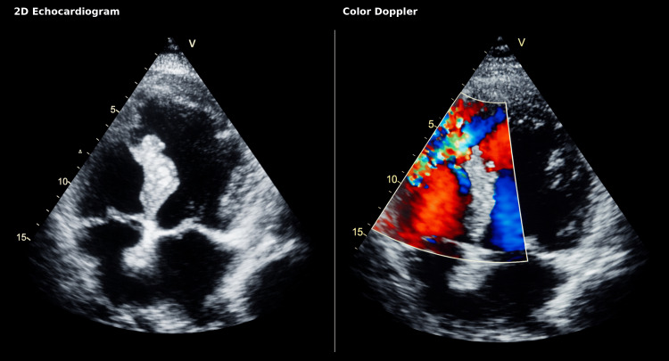
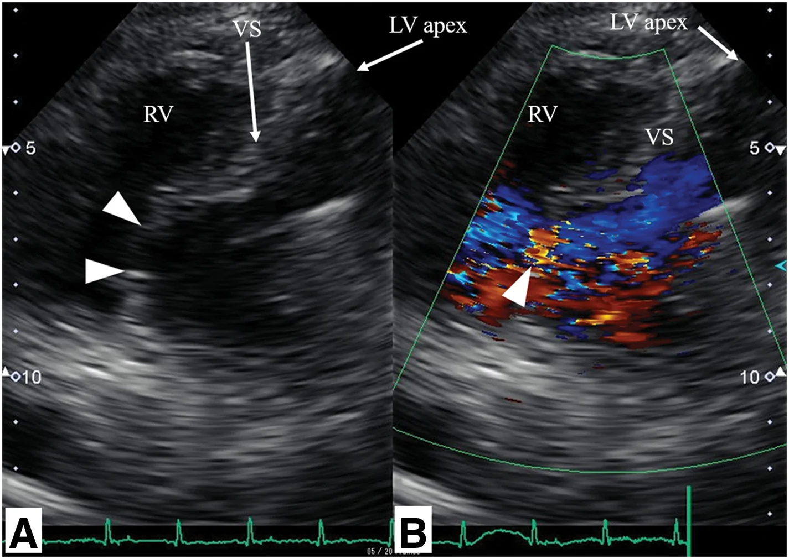

1884 — Thủng vách liên thất sau nhồi máu cơ tim cấp / Post-infarction ventricular septal rupture (VSR)
Tags: pattern:shunt-trai-phai pattern:thoi-tam-thu-moi pattern:tut-ap vung:tim vung:cotim protocol:sieutham-khan protocol:Doppler-mau protocol:TEE protocol:CTA-tim score:Killip score:Qp-Qs
Mức chắc chắn (certainty): tổng hợp y văn (literature synthesis) — ghép 4 chuỗi dữ liệu: (a) 214 ca VSR một trung tâm, tử vong 30 ngày 51,9% (J Thorac Dis 2026, PMC13655813, CC BY-NC-ND 4.0); (b) 138 ca mổ VSR, tử vong chu phẫu 17,3%, mổ ≥ 8 ngày có lợi (Wu L et al., Cardiovasc Diagn Ther 2026, PMC13554388, CC BY-NC-ND 4.0); (c) đoàn hệ 59 ca biến chứng cơ học, tử vong 30 ngày 59,3% (Alén A et al., J Clin Med 2026, PMC13706350, CC BY 4.0); (d) 2 ca nguyên văn có ảnh siêu âm (Cota-Arce JM et al., Cureus 2026, PMC13220294, CC BY 4.0; Yoshikai M et al., Surg Case Rep 2026, PMC13719268, CC BY 4.0). Số nào nguồn không đưa thì ghi "chưa rõ".
Bài này trả lời 4 câu hỏi của ca "tụt áp + thổi tâm thu mới" sau nhồi máu: (1) Siêu âm tại giường phải làm trong bao lâu và ở mặt cắt nào? (2) Doppler màu đọc thế nào để không bỏ sót lỗ nhỏ? (3) Qp/Qs bao nhiêu là shunt đáng kể, và vì sao phải đo? (4) Mổ ngay hay chờ mô hoại tử "chín" — và vì sao ECMO không làm rỗng thất có thể làm nặng thêm shunt? Đây là mặt cấu trúc – cơ học của nhồi máu cấp; khác 1842 – Takotsubo (rối loạn vận động không do tắc mạch) và 075 – Tràn dịch màng tim (vỡ thành tự do gây chèn ép).
1. Tổng quan bệnh học – cơ chế hình ảnh
1.1 Vì sao vách rách đúng vào ngày 3–7
- Nhồi máu xuyên thành → hoại tử đông (coagulative necrosis) → bạch cầu trung tính vào ồ ạt ngày 1–3, tiêu mô hoại tử → mô mềm nhũn nhất vào ngày 3–7; đây là cửa sổ vách rách. Mô hoại tử mất khả năng chịu lực trong khi áp lực trong thất trái vẫn 100–140 mmHg.
- Phân bố vỡ tim: vỡ thành tự do (free-wall rupture, FWR) ~70%, VSR ~20%, đứt cơ nhú (papillary muscle rupture, PMR) ~10%; VSR đỉnh vào ngày 3–7, FWR hai đỉnh < 24 giờ và 3–5 ngày, PMR 2–7 ngày (PMC13631418 — tổng quan về vỡ tim sau NMCT).
- Tần suất hiện đại: 0,21–0,27% STEMI (0,27% trong phân tích ~9 triệu ca nhập viện, tử vong nội viện 42,4%; NSTEMI 0,06%, 18,0%) — dẫn qua PMC13706350; ca nguyên văn PMC13220294 dẫn 0,21%.
- Tiên lượng: tử vong 30 ngày 51,9% trên 214 ca (nhóm điều trị nội khoa đơn thuần 90,1%; mổ kinh điển 25,0%; can thiệp qua da 25,7%) — PMC13655813. Tử vong chu phẫu 17,3% ở nhóm mổ được (138 ca) — PMC13554388, tức là "chọn được bệnh nhân để mổ" đã là một nửa tiên lượng.
1.2 TẠI SAO thấy được trên siêu âm (vật lý, không phải "vì nó thủng")
- 2D: lỗ là mất liên tục cơ tim vách — bờ "bite-like" (bị gặm) vì mô hoại tử rời rạc, khác bờ nhẵn của thông liên thất bẩm sinh. Kích thước đo được: 11 mm (ca PMC13220294, vách đỉnh) và 18 mm (ca PMC13719268, vách nền).
- Doppler màu: chênh áp thất trái–thất phải cuối tâm thu ~100 mmHg (HA 120 so với RV 25) → vận tốc jet > 4 m/s, vượt ngưỡng Nyquist thường đặt 50–70 cm/s → alias: chuỗi đỏ–vàng–xanh "mosaic" bắt đầu từ bờ trái của vách, phụt sang thất phải, rộng nhất thì tâm thu. Jet vận tốc cao là lý do Doppler màu thấy rõ hơn 2D.
- Doppler liên tục (CW): đo vận tốc đỉnh, gradient ΔP = 4v² (Bernoulli giản lược); ví dụ v = 4 m/s → ΔP ≈ 64 mmHg, phù hợp sinh lý chênh áp.
- Qp/Qs (tỉ lệ dòng phổi/dòng hệ thống): shunt trái–phải làm dòng phổi lớn hơn dòng hệ thống; bình thường 1,0; ngưỡng quy ước shunt đáng kể ≥ 1,5. Ca thật trong y văn: 2,3 (PMC13220294), 2,5 và 5,6 (PMC13044581), 2,75 (PMC13531077), 6,2 (PMC13719268), 8,17 (PMC13485405) — tức là VSR sau nhồi máu thường shunt rất lớn, lớn hơn nhiều thông liên thất bẩm sinh cùng kích thước.
- Hệ quả sinh lý: thất phải quá tải thể tích + phổi ứ → giảm cung lượng hệ thống; tụt áp, thận giảm tưới máu (creatinin và lactat tăng là yếu tố tiên lượng độc lập, OR 1,010 mỗi µmol/L và 1,337 mỗi mmol/L — PMC13655813).
2. Mẫu hình + chẩn đoán phân biệt theo vị trí và thời điểm (Gamut)
- Theo vị trí lỗ: đỉnh/giữa vách (nhồi máu trước, LAD — 89,8% ca mổ có LAD là động mạch thủ phạm, PMC13554388); vách nền/basal (nhồi máu dưới, RCA — sát van nhĩ–thất, mổ khó, dễ sót shunt, ca PMC13719268); sau–dưới. Vị trí quyết định đường mổ (vách nền: đường vào nhĩ phải, tránh rạch thất).
- Theo thời điểm so với nhồi máu: < 24 giờ** (hiếm, thường kèm vỡ thành), **1–7 ngày** (đa số, mô nhũn nhất), **> 7 ngày ("VSR muộn" — mô xơ hơn, mổ thuận lợi hơn nhưng phải sống được đến lúc đó).
- Gamut của "tụt áp + thổi tâm thu mới" sau NMCT — gợi nhớ RAMP:
- Rupture septum (VSR) — thổi tâm thu thô, lan rộng, kèm rung miu, tăng khi giảm hậu tải.
- Acute mitral regurgitation (đứt cơ nhú) — thổi phụt tâm thu ra nách, phù phổi nặng nhanh.
- Mechanical tamponade (vỡ thành tự do) — không có thổi, tĩnh mạch cổ nổi, điện tim giảm biên độ.
- Pump failure (nhồi máu thất phải, takotsubo, choáng nhiễm khuẩn) — không thổi mới, không shunt.
- Ngoài ra: tràn khí màng phổi áp lực sau đặt catheter trung tâm/máy tạo nhịp — không thổi, phổi một bên mất dấu.
3. Bảng so sánh phân biệt (ma trận đối chiếu)
| Thực thể (entity) | Hình ảnh điển hình | Chốt vào (rule-in) | Chốt loại (rule-out) | Gợi ý xác nhận |
|---|---|---|---|---|
| VSR sau NMCT | Mất liên tục vách, bờ "bite-like"; Doppler màu jet mosaic LV→RV thì tâm thu; Qp/Qs ≥ 1,5 | Jet xuyên vách có hướng LV→RV trên Doppler màu + ổ hoại tử cơ tim cùng vùng | Vách liên tục ở mọi mặt cắt + không jet dù Nyquist thấp → không phải VSR | TTE + Doppler màu/CW; TEE nếu vách nền; thông tim đo Qp/Qs; CTA trước can thiệp qua da |
| Đứt cơ nhú / hở hai lá cấp | Dây van/lá van lật vào nhĩ trái thì tâm thu; jet hở hai lá hướng ra nách, phổ CW dày đặc | Jet hở hai lá mới + lá van/dây bị đứt thấy được | Jet xuyên vách LV→RV → không phải MR đơn thuần | TTE + TEE; đo diện tích lỗ hở (ERO), tĩnh mạch phổi ứ |
| Vỡ thành tự do / chèn ép tim | Dịch màng tim ± cục máu, thất phải xẹp thì tâm trương, đảo ngược vận động vách | Dịch màng tim + xẹp buồng + tụt áp | Không dịch, không xẹp buồng → không chèn ép | TTE dưới sườn; chọc dẫn lưu cấp cứu |
| Nhồi máu thất phải | RV giãn, vách đẩy về thất trái, TAPSE giảm, phổi sạch | RV giãn + phổi sạch + tụt áp | Phổi ứ nặng + RV không giãn → nghĩ VSR/MR | TTE; ECG V4R; áp lực nhĩ phải |
| Takotsubo hậu phẫu/ICU | Bóng cơ tim đỉnh–giữa, vượt quá một lãnh thổ vành, không có lỗ vách | Rối loạn vận động vượt lãnh thổ + không jet xuyên vách | Có jet xuyên vách → loại takotsubo đơn thuần | 1842: T2 map, troponin thấp so với mức rối loạn vận động |
| Sốc nhiễm khuẩn / VAP sau mổ | Tim không có tổn thương cơ học mới; ổ nhiễm ngoài tim | Có ổ nhiễm + tim không jet, không dịch | Có jet xuyên vách hoặc dịch chèn ép → loại nguyên nhân ngoài tim | Cấy máu/đờm; siêu âm phổi; không trì hoãn TTE |

*Trái: 2D — vách liên thất đỉnh mỏng, mất liên tục, bờ "bite-like". Phải: Doppler màu — jet mosaic LV→RV xuyên lỗ vách, xác nhận shunt trái–phải. Nguồn: Cureus 2026, PMC13220294, CC BY 4.0.*3.1 Ba câu hỏi hình ảnh quyết định
- Có lỗ thật hay chỉ là "drop-out" do mặt cắt? Xoay đầu dò ±15°, đổi mặt cắt (4 buồng → trục ngắn → dưới sườn), hạ Nyquist; lỗ thật phải thấy ở ≥ 2 mặt cắt trực giao và có jet.
- Jet đi chiều nào? LV→RV (shunt trái–phải) = VSR; RV→LV = hiếm, gặp khi áp lực thất phải vượt thất trái (shunt đảo chiều, tiên lượng nặng).
- Shunt lớn đến đâu? Đo Qp/Qs (siêu âm: đường kính đường ra thất trái/phải × VTI; hoặc thông tim). Qp/Qs ≥ 1,5 = đáng kể; đồng thời tìm dấu hiệu thất phải quá tải (RV giãn, vách đẩy sang trái, tĩnh mạch chủ dưới giãn).
4. Protocol chụp + phân độ + thời điểm can thiệp
4.1 Trình tự tại giường (không chờ "giờ hành chính")
- TTE trong vài phút khi có thổi tâm thu mới, tụt áp, phù phổi, hoặc khi nghi biến chứng cơ học: mặt cắt 4 buồng từ mỏm, trục ngắn cạnh ức, dưới sườn; quét toàn bộ vách từ nền đến đỉnh (lỗ vách nền rất dễ sót).
- Doppler màu Nyquist 50–70 cm/s phủ toàn vách; thấy jet lạ → CW đo vận tốc, tính ΔP = 4v².
- Đo: kích thước lỗ (mm), Qp/Qs, PAP, EF, có/không hở hai lá, có/không dịch màng tim.
- TEE khi cửa sổ kém, nghi VSR vách nền hoặc trước can thiệp qua da; CTA tim khi cần bản đồ giải phẫu cho dụng cụ đóng qua da (không trì hoãn mổ cấp vì CT).
- Phân độ Killip (I–IV) + lactat/creatinin: đây là các biến tiên lượng độc lập trong mô hình 30 ngày (OR lactat 1,337; creatinin 1,010) — PMC13655813.
4.2 "Mổ ngay hay chờ" — hai nguồn, một hướng
- STS database (dẫn trong PMC13220294): tử vong mổ 42,9% chung; 54,1% nếu mổ < 7 ngày** so với **18,4%** nếu **> 7 ngày.
- Nhóm Bắc Kinh (PMC13554388, 138 ca): tử vong chu phẫu 39,4% khi mổ < 7 ngày** so với **9,0%** khi **> 7 ngày; VSR→mổ ≥ 8 ngày OR 0,156 (KTC 95% 0,055–0,444); mở lại động mạch thủ phạm (opened IRA) OR 0,214 — vì mở IRA giúp bệnh nhân sống đến cửa sổ mổ (72,5% so với 86,5% sống qua ngày 8).
- Nhưng "chờ" chỉ dành cho người chờ được: nhóm sốc tim/thiểu niệu phải mổ hoặc can thiệp ngay; nhóm 214 ca cho thấy điều trị nội đơn thuần tử vong 90,1%.
- Cầu nối: IABP giảm hậu tải → giảm shunt (37,6% ca mổ được dùng IABP — PMC13554388). VA-ECMO khôi phục tưới máu nhưng tăng hậu tải thất trái và có thể làm tăng shunt nếu không làm rỗng thất (LV unloading) — PMC13706350; đây là lý do ECMO đơn thuần không được coi là "điều trị VSR".
- ESC 2023 (ACS): nghi biến chứng cơ học → siêu âm tim ngay, chuyển trung tâm có phẫu thuật tim, cân nhắc MCS ngắn hạn để cầu nối.
flowchart TD
A[Nhồi máu cấp + tụt áp hoặc thổi tâm thu mới] --> B[TTE tại giường trong vài phút]
B -->|Không thấy jet, vách liên tục ở 3 mặt cắt| C[Tìm nguyên nhân khác: MR cấp, chèn ép, RV, takotsubo, nhiễm khuẩn]
B -->|Jet LV sang RV xuyên vách| D[Đo lỗ mm, Qp/Qs, PAP, EF; Killip + lactat]
D --> E{Sốc tim hoặc thiểu niệu?}
E -->|Có| F[MCS cầu nối: IABP giảm shunt; ECMO phải kèm làm rỗng thất]
E -->|Không| G[Theo dõi sát tại ICU tim mạch]
F --> H[Hội chẩn tim mạch can thiệp và phẫu thuật tim]
G --> H
H -->|Mổ được và mô đã chín| I[Vá vách thì chọn, mục tiêu sau ngày 7 nếu huyết động cho phép]
H -->|Sốc không cải thiện| J[Vá cấp cứu dù mô nhũn, chấp nhận nguy cơ shunt tồn lưu]
H -->|Nguy cơ mổ cấm| K[Đóng qua da bằng dụng cụ hoặc vá như cầu nối]
I --> L[Sau mổ: siêu âm tìm shunt tồn lưu trước khi ra ICU]
J --> L
K --> L
4.3 Ngưỡng hành động (ghi vào phiếu)
- Thổi tâm thu mới + tụt áp → TTE < 30 phút, không chờ siêu âm tim chính quy.
- Qp/Qs ≥ 1,5 hoặc thất phải giãn + phổi ứ → chỉ định đóng lỗ, không theo dõi nội khoa đơn thuần.
- VSR→mổ ≥ 8 ngày là mục tiêu nếu huyết động cho phép; sốc không đáp ứng MCS → mổ sớm, chấp nhận tử vong chu phẫu cao (39,4–54,1%).
5. Biến thể bình thường và cạm bẫy
- Biến thể bình thường dễ nhầm: drop-out vách đỉnh ở mặt cắt 4 buồng (do mặt phẳng cắt song song vách) — bờ nhẵn, không jet, mất khi xoay đầu dò; dây van/phần phụ tạo tín hiệu Doppler giả trong buồng thất; thông liên thất bẩm sinh ở người trẻ (bờ nhẵn, không ổ hoại tử, có bệnh sử).
- Cạm bẫy 1 — "bệnh nhân im lặng": tiếng thổi bị máy thở, tiếng ồn ICU, vận mạch che mất; nhóm 214 ca có 68,5% ca tử vong vào với sốc tim mà nhiều ca không ghi nhận thổi rõ. Nghi ngờ huyết động là đủ để chụp.
- Cạm bẫy 2 — chỉ đọc 2D: lỗ 11 mm có thể kín trên một mặt cắt; luôn bật Doppler màu và quét toàn vách.
- Cạm bẫy 3 — bỏ sót vách nền: VSR basal sát van nhĩ–thất, dễ bị che bởi van ba lá; cần TEE và mặt cắt dưới sườn.
- Cạm bẫy 4 — "đã tái thông thì không vỡ": ca 76 tuổi (PMC13220294) vỡ 36–48 giờ sau chiến lược dược–can thiệp đúng giờ, và ca 88 tuổi (PMC13719268) vỡ sau PCI thành công. Tái thông giảm nhưng không xóa nguy cơ.
- Cạm bẫy 5 — shunt tồn lưu sau vá: 2/24 ca tử vong chu phẫu do shunt tồn lưu gây suy tim (PMC13554388) → bắt buộc siêu âm kiểm tra ngay sau mổ.
- Cạm bẫy 6 — bỏ sót tổn thương phối hợp: ~5% ca VSR mổ có biến chứng cơ học thứ hai (vỡ thành/phình giả) trong đoàn hệ CAUTION; đoàn hệ 59 ca có 16,9% VSR + vỡ thành kín (PMC13706350) → luôn khảo sát toàn bộ thành tự do và van hai lá.
- Cạm bẫy 7 — ECMO không làm rỗng thất: tăng hậu tải → shunt tăng, phổi ứ nặng hơn dù huyết áp "đẹp" (PMC13706350).
6. Tự lượng giá — Blind Quiz
Ca 1 — Nam 76 tuổi, nhồi máu trước, đã tiêu sợi huyết đúng giờ; 36 giờ sau nghe thổi tâm thu thô. Nhìn 2D trước, rồi bật màu.
- Gợi ý lâm sàng: huyết động còn ổn; không đau ngực; không sốt.
- Câu hỏi: (1) Bất thường ở vách là gì? (2) Vì sao Doppler màu thấy rõ hơn 2D? (3) Qp/Qs ước lượng được từ đâu và bao nhiêu thì đáng kể?
Bấm để hiện đáp án (findings + chẩn đoán)
- Findings: vách liên thất đỉnh–dưới mỏng, mất liên tục kiểu "bị gặm", lỗ 11 mm; Doppler màu: jet mosaic LV→RV thì tâm thu, Qp/Qs 2,3 (số của ca gốc).
- Chẩn đoán: VSR sau nhồi máu (thể đơn giản — simple VSR), phát hiện 36–48 giờ sau tái thông.
- Vì sao màu thấy rõ: chênh áp ~100 mmHg → vận tốc > 4 m/s, vượt Nyquist → alias; jet vận tốc cao "vẽ" đường đi của shunt trong khi lỗ 11 mm trên 2D chỉ là một khoảng trống nhỏ.
- Nguồn: Cureus 2026, PMC13220294, CC BY 4.0 (ảnh nguyên bản, không chỉnh sửa).
Ca 2 — Nữ 88 tuổi, nhồi máu dưới, PCI thành công; tụt áp, phải IABP. Mặt cắt từ mỏm.

- Gợi ý lâm sàng: suy tim cấp, IABP; lỗ 18 mm vùng vách nền.
- Câu hỏi: (1) Vị trí lỗ khác ca 1 ở điểm nào và vì sao khó mổ hơn? (2) Qp/Qs đo được 6,2 nói lên điều gì? (3) Vì sao IABP có lợi về mặt shunt?
Bấm để hiện đáp án (findings + chẩn đoán)
- Findings: (A) vách nền mất liên tục (arrowheads), (B) jet trái–phải qua lỗ; thông tim: Qp/Qs 6,2, PAP 60/28 mmHg (trung bình 43), PCWP 28 mmHg.
- Chẩn đoán: VSR vách nền sau nhồi máu dưới, shunt rất lớn; mổ ngày 11 bằng đường nhĩ phải + hai miếng vá (sandwich), không rạch thất; sống 5,5 năm không shunt tồn lưu.
- Vì sao khó: vách nền sát van ba lá và van hai lá; dây van và cơ nhú bám vách nằm ngay đường khâu → dễ sót shunt và hở van; đường nhĩ phải cho phép nhìn thẳng lỗ mà không cắt cơ tim lành.
- Qp/Qs 6,2: dòng phổi gấp > 6 lần dòng hệ thống — mức shunt "khổng lồ", giải thích phù phổi và tụt áp; đây là chỉ định đóng.
- IABP: giảm hậu tải thất trái → giảm chênh áp LV–RV → giảm lượng shunt, đồng thời tăng tưới máu vành; không thay thế được đóng lỗ.
- Nguồn: Surg Case Rep 2026, PMC13719268, CC BY 4.0.
Bài liên quan chéo
- 800 – Tổng quan Tim mạch
- 810 – CTA vành CAD-RADS (đánh giá động mạch thủ phạm trước can thiệp)
- 820 – MRI tim LGE (đánh giá hoại tử và sống cơ sau mổ)
- 1842 – Takotsubo ở ICU và hậu phẫu (hàng DDx của tụt áp không có thổi)
- 1885 – Viêm màng ngoài tim co thắt (suy tim sau mổ tim)
- 075 – Tràn dịch màng tim (vỡ thành tự do, chèn ép tim)
Ảnh
images/1884_thung-vach_TTE-4buong_PMC13220294.jpg— TTE 4 buồng: 2D + Doppler màu — Cureus 2026, PMC13220294, CC BY 4.0.images/1884_thung-vach_TTE-Doppler_PMC13719268.jpg— TTE: (A) lỗ vách nền, (B) jet trái–phải — Surg Case Rep 2026, PMC13719268, CC BY 4.0.- Chi tiết nguồn + giấy phép:
images/CREDITS.md.
Không dùng để chẩn đoán độc lập khi chưa có người hướng dẫn.